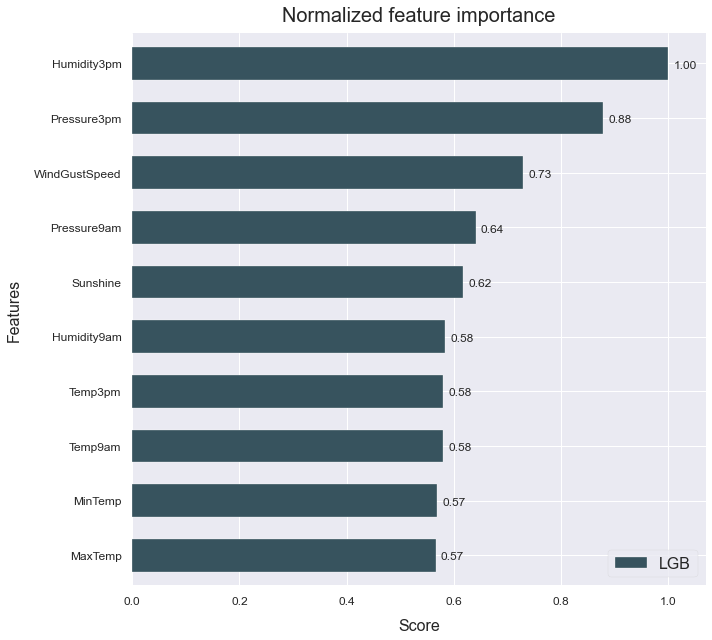
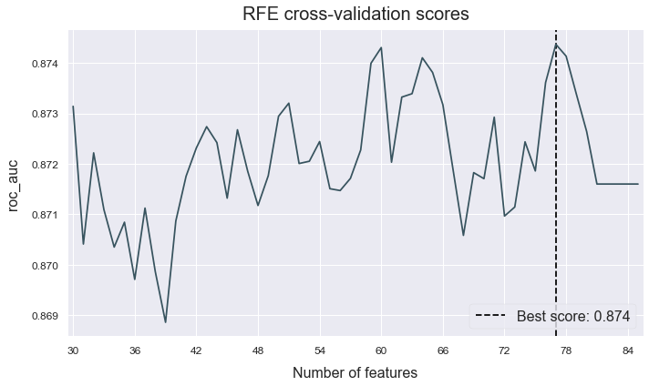

Feature engineering
This example shows how to use automated feature generation to improve your model's performance.
The data used is a variation on the Australian weather dataset from https://www.kaggle.com/jsphyg/weather-dataset-rattle-package. The goal of this dataset is to predict whether or not it will rain tomorrow training a binay classifier on target RainTomorrow.
Load the data
# Import packages
import pandas as pd
from atom import ATOMClassifier
# Load data
X = pd.read_csv('./datasets/weatherAUS.csv')
# Let's have a look at a subset of the data
X.sample(frac=1).iloc[:5, :8]
| Location | MinTemp | MaxTemp | Rainfall | Evaporation | Sunshine | WindGustDir | WindGustSpeed | |
|---|---|---|---|---|---|---|---|---|
| 118244 | Perth | 20.9 | 35.5 | 0.0 | 11.0 | 13.1 | SW | 31.0 |
| 17985 | NorahHead | 19.1 | 21.0 | 0.0 | NaN | NaN | S | 44.0 |
| 96569 | Adelaide | 7.6 | 16.1 | 1.8 | NaN | NaN | SW | 35.0 |
| 63982 | MelbourneAirport | 5.8 | 11.9 | 3.6 | 1.8 | 6.6 | N | 52.0 |
| 97093 | MountGambier | 6.2 | 11.7 | 10.8 | 1.8 | 0.8 | WNW | 31.0 |
Run the pipeline
# Initiate ATOM and apply data cleaning
atom = ATOMClassifier(X, n_rows=1e4, test_size=0.2, verbose=0, random_state=1)
atom.impute(strat_num='knn', strat_cat='remove', min_frac_rows=0.8)
atom.encode(max_onehot=10, frac_to_other=0.04)
# Let's see how a LightGBM model performs without adding additional features
atom.run('LGB', metric='auc')
atom.scoring()
Results ===================== >>
LightGBM --> roc_auc: 0.945
# What are the most important fetaures?
atom.plot_feature_importance(show=10)

Now let's create some new fetaures using Deep Feature Synthesis
atom.verbose = 2 # Increase verbosity to see the output
# Create 100 new features using DFS
atom.feature_generation(strategy='dfs', n_features=100)
# Select the best 50 features using RFECV
atom.feature_selection(strategy='RFECV', solver='lgb', n_features=30, scoring='auc')
Fitting FeatureGenerator...
Creating new features...
--> 100 new features were added to the dataset.
Fitting FeatureSelector...
C:\Users\Mavs\AppData\Roaming\Python\Python37\site-packages\pandas\core\series.py:679: RuntimeWarning: divide by zero encountered in log
result = getattr(ufunc, method)(*inputs, **kwargs)
Performing feature selection ...
--> Feature Location was removed due to low variance. Value 0.21025 repeated in 100.0% of rows.
--> Feature WindDir3pm + WindSpeed9am was removed due to collinearity with another feature.
--> Feature Pressure9am + RainToday_Yes was removed due to collinearity with another feature.
--> Feature Cloud9am + Humidity9am was removed due to collinearity with another feature.
--> Feature MaxTemp + WindGustDir was removed due to collinearity with another feature.
--> Feature Location + Pressure3pm was removed due to collinearity with another feature.
--> Feature Location + Rainfall was removed due to collinearity with another feature.
--> Feature RainToday_Yes + Temp9am was removed due to collinearity with another feature.
--> Feature Evaporation + Location was removed due to collinearity with another feature.
--> Feature Location + MaxTemp was removed due to collinearity with another feature.
--> Feature Location - RainToday_Yes was removed due to collinearity with another feature.
--> Feature Cloud3pm - RainToday_Yes was removed due to collinearity with another feature.
--> Feature Humidity3pm - WindDir9am was removed due to collinearity with another feature.
--> Feature Sunshine - WindDir3pm was removed due to collinearity with another feature.
--> Feature WindDir9am - WindSpeed3pm was removed due to collinearity with another feature.
--> Feature Humidity9am * Pressure9am was removed due to collinearity with another feature.
--> Feature MinTemp * Pressure9am was removed due to collinearity with another feature.
--> Feature Location * WindGustDir was removed due to collinearity with another feature.
--> Feature MaxTemp * Pressure3pm was removed due to collinearity with another feature.
--> Feature Pressure9am * WindSpeed9am was removed due to collinearity with another feature.
--> Feature Cloud3pm * Pressure3pm was removed due to collinearity with another feature.
--> Feature Temp3pm * WindSpeed3pm was removed due to collinearity with another feature.
--> Feature Location * Pressure3pm was removed due to collinearity with another feature.
--> Feature Pressure9am * Temp9am was removed due to collinearity with another feature.
--> Feature Humidity9am / Pressure3pm was removed due to collinearity with another feature.
--> Feature RainToday_No / Location was removed due to collinearity with another feature.
--> Feature WindSpeed9am / RainToday_No was removed due to collinearity with another feature.
--> Feature Pressure3pm / Location was removed due to collinearity with another feature.
--> Feature WindDir9am / Pressure9am was removed due to collinearity with another feature.
--> Feature Evaporation / RainToday_Yes was removed due to collinearity with another feature.
--> Feature SQRT(WindGustDir) was removed due to collinearity with another feature.
--> Feature SQRT(Pressure9am) was removed due to collinearity with another feature.
--> Feature WindSpeed9am was removed by the RFECV.
--> Feature WindSpeed3pm was removed by the RFECV.
--> Feature Cloud3pm was removed by the RFECV.
--> Feature RainToday_Yes was removed by the RFECV.
--> Feature RainToday_No was removed by the RFECV.
--> Feature Rainfall * RainToday_No was removed by the RFECV.
--> Feature Location / RainToday_Yes was removed by the RFECV.
--> Feature LOG(Rainfall) was removed by the RFECV.
# The collineart attribute shows what features
# were removed due to collinearity
atom.collinear
| drop_feature | correlated_feature | correlation_value | |
|---|---|---|---|
| 0 | WindDir3pm + WindSpeed9am | WindSpeed9am | 0.99999 |
| 1 | Pressure9am + RainToday_Yes | Pressure9am | 0.99832 |
| 2 | Cloud9am + Humidity9am | Humidity9am | 0.99422 |
| 3 | MaxTemp + WindGustDir | MaxTemp | 0.99998 |
| 4 | Location + Pressure3pm | Pressure3pm | 1.0 |
| 5 | Location + Rainfall | Rainfall | 1.0 |
| 6 | RainToday_Yes + Temp9am | Temp9am | 0.99794 |
| 7 | Evaporation + Location | Evaporation | 1.0 |
| 8 | Location + MaxTemp | MaxTemp, MaxTemp + WindGustDir | 1.0, 0.99998 |
| 9 | Location - RainToday_Yes | RainToday_Yes, RainToday_No | -1.0, 0.98441 |
| 10 | Cloud3pm - RainToday_Yes | Cloud3pm | 0.98149 |
| 11 | Humidity3pm - WindDir9am | Humidity3pm | 1.0 |
| 12 | Sunshine - WindDir3pm | Sunshine | 0.99987 |
| 13 | WindDir9am - WindSpeed3pm | WindSpeed3pm, RainToday_No - WindSpeed3pm | -0.99998, 0.99879 |
| 14 | Humidity9am * Pressure9am | Humidity9am, Cloud9am + Humidity9am | 0.99965, 0.99341 |
| 15 | MinTemp * Pressure9am | MinTemp | 0.99992 |
| 16 | Location * WindGustDir | WindGustDir | 1.0 |
| 17 | MaxTemp * Pressure3pm | MaxTemp, MaxTemp + WindGustDir, Location + Max... | 0.9998, 0.99974, 0.9998 |
| 18 | Pressure9am * WindSpeed9am | WindSpeed9am, WindDir3pm + WindSpeed9am, WindD... | 0.99991, 0.99989, -0.99991 |
| 19 | Cloud3pm * Pressure3pm | Cloud3pm, Cloud3pm - RainToday_Yes | 0.99986, 0.98165 |
| 20 | Temp3pm * WindSpeed3pm | MaxTemp * WindSpeed3pm | 0.99029 |
| 21 | Location * Pressure3pm | Pressure3pm, Location + Pressure3pm | 1.0, 1.0 |
| 22 | Pressure9am * Temp9am | Temp9am, RainToday_Yes + Temp9am | 0.99987, 0.9976 |
| 23 | Humidity9am / Pressure3pm | Humidity9am, Cloud9am + Humidity9am, Humidity9... | 0.99965, 0.99422, 0.99863 |
| 24 | RainToday_No / Location | RainToday_Yes, RainToday_No, Location - RainTo... | -0.98441, 1.0, 0.98441 |
| 25 | WindSpeed9am / RainToday_No | WindSpeed9am, WindDir3pm + WindSpeed9am, WindD... | 1.0, 0.99999, -0.99998, 0.99993 |
| 26 | Pressure3pm / Location | Pressure3pm, Location + Pressure3pm, Location ... | 1.0, 1.0, 1.0 |
| 27 | WindDir9am / Pressure9am | WindDir9am, Location - WindDir9am | 0.99958, -0.99958 |
| 28 | Evaporation / RainToday_Yes | Evaporation, Evaporation + Location | 1.0, 1.0 |
| 29 | SQRT(WindGustDir) | WindGustDir, Location * WindGustDir | 0.9979, 0.9979 |
| 30 | SQRT(Pressure9am) | Pressure9am, Pressure9am + RainToday_Yes | 1.0, 0.99831 |
# After applying RFECV, we can plot the score per number of features
atom.plot_rfecv()

# Since the new features apply divisions, we can have inf values in the dataset
atom.impute(strat_num='knn', strat_cat='remove', min_frac_rows=0.8)
Fitting Imputer...
Imputing missing values...
--> Imputing 4 missing values using the KNN imputer in feature Temp9am / MinTemp.
--> Dropping feature WindSpeed3pm / Rainfall for containing 5766 (64%) missing values.
--> Imputing 33 missing values using the KNN imputer in feature Evaporation / WindSpeed3pm.
--> Imputing 17 missing values using the KNN imputer in feature RainToday_No / Evaporation.
--> Imputing 4 missing values using the KNN imputer in feature Cloud9am / MinTemp.
--> Imputing 290 missing values using the KNN imputer in feature Pressure9am / Cloud3pm.
--> Imputing 33 missing values using the KNN imputer in feature Pressure9am / WindSpeed3pm.
--> Imputing 17 missing values using the KNN imputer in feature MinTemp / Evaporation.
--> Imputing 4 missing values using the KNN imputer in feature Cloud3pm / MinTemp.
--> Imputing 4 missing values using the KNN imputer in feature Rainfall / MinTemp.
--> Imputing 17 missing values using the KNN imputer in feature WindSpeed9am / Evaporation.
--> Imputing 33 missing values using the KNN imputer in feature WindSpeed9am / WindSpeed3pm.
--> Imputing 33 missing values using the KNN imputer in feature Rainfall / WindSpeed3pm.
# Let's see how the model performs now
atom.run('LGB')
Running pipeline ============================= >>
Models in pipeline: LGB
Metric: roc_auc
Results for LightGBM:
Fitting -----------------------------------------
Score on the train set --> roc_auc: 0.9955
Score on the test set --> roc_auc: 0.9502
Time elapsed: 1.409s
-------------------------------------------------
Total time: 1.428s
Final results ========================= >>
Duration: 1.430s
------------------------------------------
LightGBM --> roc_auc: 0.950
# Did the feature importance change?
atom.plot_feature_importance(show=10)

Lets try the same using Genetic Feature Generation
atom = ATOMClassifier(X, n_rows=1e4, test_size=0.2, verbose=0, random_state=1)
atom.impute(strat_num='knn', strat_cat='remove', min_frac_rows=0.8)
atom.encode(max_onehot=10, frac_to_other=0.04)
atom.verbose = 2 # Increase verbosity to see the steps
# Create new features using Genetic Programming
atom.feature_generation(strategy='genetic', n_features=10, generations=20, population=1000)
Fitting FeatureGenerator...
| Population Average | Best Individual |
---- ------------------------- ------------------------------------------ ----------
Gen Length Fitness Length Fitness OOB Fitness Time Left
0 3.13 0.135435 3 0.503097 N/A 11.11s
1 3.18 0.348074 7 0.506413 N/A 10.95s
2 3.23 0.437331 5 0.513643 N/A 9.99s
3 3.44 0.457825 5 0.513643 N/A 9.33s
4 4.50 0.449698 9 0.522278 N/A 8.81s
5 5.65 0.45053 13 0.527538 N/A 9.66s
6 7.76 0.472921 17 0.528579 N/A 7.96s
7 9.36 0.49098 15 0.529782 N/A 7.43s
8 9.83 0.488757 15 0.529782 N/A 6.76s
9 10.63 0.488877 15 0.529782 N/A 6.18s
10 11.03 0.485024 13 0.528901 N/A 5.61s
11 11.31 0.48378 11 0.527328 N/A 5.04s
12 10.61 0.482128 11 0.527328 N/A 4.35s
13 10.99 0.486747 11 0.527328 N/A 3.78s
14 10.81 0.487697 11 0.527328 N/A 3.11s
15 11.03 0.487411 11 0.527328 N/A 2.49s
16 10.89 0.490537 11 0.527328 N/A 1.86s
17 10.98 0.484706 11 0.546642 N/A 1.24s
18 10.90 0.481711 11 0.546642 N/A 0.62s
19 10.96 0.486717 13 0.555663 N/A 0.00s
Creating new features...
-------------------------------------------------
--> 10 new features were added to the dataset.
# We can see the feature's fitness and description through the genetic_features attribute
atom.genetic_features
| name | description | fitness | |
|---|---|---|---|
| 0 | Feature 23 | mul(Humidity3pm, mul(add(WindGustSpeed, WindDi... | 0.542663 |
| 1 | Feature 24 | mul(sub(add(WindGustSpeed, WindDir9am), Sunshi... | 0.539049 |
| 2 | Feature 25 | mul(Humidity3pm, mul(sub(Humidity3pm, Sunshine... | 0.533669 |
| 3 | Feature 26 | mul(Humidity3pm, mul(Humidity3pm, mul(Humidity... | 0.530592 |
| 4 | Feature 27 | mul(Humidity3pm, mul(Humidity3pm, add(WindGust... | 0.532912 |
| 5 | Feature 28 | mul(sub(sub(add(WindGustSpeed, WindDir9am), Su... | 0.522363 |
| 6 | Feature 29 | mul(Humidity3pm, mul(Humidity3pm, sub(sub(sub(... | 0.518317 |
| 7 | Feature 30 | mul(mul(Humidity3pm, sub(sub(add(WindGustSpeed... | 0.511776 |
| 8 | Feature 31 | mul(Humidity3pm, mul(Humidity3pm, mul(Humidity... | 0.514151 |
| 9 | Feature 32 | mul(Humidity3pm, mul(Humidity3pm, sub(sub(sub(... | 0.516328 |
# And fit the model again
atom.run('LGB', metric='auc')
Running pipeline ============================= >>
Models in pipeline: LGB
Metric: roc_auc
Results for LightGBM:
Fitting -----------------------------------------
Score on the train set --> roc_auc: 0.9879
Score on the test set --> roc_auc: 0.9459
Time elapsed: 0.545s
-------------------------------------------------
Total time: 0.557s
Final results ========================= >>
Duration: 0.559s
------------------------------------------
LightGBM --> roc_auc: 0.946
# And show the feature importance
atom.plot_feature_importance(show=10)